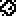

Rick Ardurous
Documentation
|
Rick Ardurous Documentation |
Rick Ardurous is a game developed by Alban Nanty for the Arduboy, and inspired by the retro-game Rick Dangerous, where the player takes the role of an adventurer exploring caves in the hope of finding the Grail. The game propose a series of puzzles fitting in one screen. The player will have to reach the exit point of each screen to move to the next puzzle. The game propose 12 puzzle-screens with an increasing difficulty.
Rick Ardurous is open source. The repository is located here: https://github.com/Lswbanban/RickArdurous. After cloning the repository you will find several folders:
If you want to modify and recompile the game, you can open the RickArdurous.ino file located in the base folder, with the Arduino IDE. Otherwise if you just want to launch the game as it is with a game launcher, you can open the RickArdurous.arduboy file located in the Release folder.
After cloning the repository, to launch the Level editor on Windows platform, run the RickArdurousEditor.exe executable located in the Release folder. If you change the folder structure, the editor will have trouble to reads the files located in the parent folder and in the image folder, however you can change those paths in the Preferences of the Editor (through the File > Preferences... menu).
The main window of the Editor is split in several panels which size can be adjusted. Refer to the sceenshot and the list below to learn more about the functionality of each panel:

The toolbar contains 4 buttons which are (from left to right):
Panning and Zooming: You can use the mouse wheel to zoom in/out. Then you can click on the mouse wheel and move the mouse to pan the view (once zoomed in).
Background Editing: First select a background sprite in panel (1), then click with the Right Mouse Button on the map panel (3), to set the background sprite at the clicked position. If you want to delete a sprite, you need to select the empty sprite (the last sprite) on the panel (1), then use the Right Mouse Button on the map panel (3). Note that some sprite will randomly be mirrored once placed on the map, and you cannot control it. The random algorithm depends on the coordinate of the sprite, and is the same in the editor than in the game, so you should see the same background in the editor and in the game. Some other sprites are mirrored depeding on their neighbors: the sprite 7 and 8 will be mirrored if there's an empty sprite on their left, and the big statue sprites (9 and 10) will be mirrored if there's the same sprite on their left.
Item Editing: First select a sprite in the item panel (2), then click with the Left Mouse Button on an empty spot of the map panel (3) to add a sprite. If you click with the Left Mouse Button on an existing sprite on the map panel (3), it will select this sprite instead of adding a new one. The selected sprite will be surrounded with a yellow frame. If you want to add an item very close to an existing one, add it first in an empty spot, then move it. You can move an item by selecting it, and drag'n'dropping it on the map panel (3) with the left mouse button. For precise item positioning, zoom in the map with the mouse wheel before moving the item. If you want to delete an item, first select it, then press the "Del" or "Backspace" key, or click on the red cross in the toolbar.
Some items can be mirrored, which has various effects in the game. To mirror an item, first select it on the map panel (3), then click on the mirror button in the toolbar. To un-mirror an item, click again on the mirror button in the toolbar. Here are the effects of mirroring for the various items:
Two items, the Rick Spawn point and the Rolling Boulder can have 2 states, denoted by a bright or dark color. You can switch their state by first selecting the item, then clicking on the item state button in the toolbar, which will change the brightness of the item to denote its state.
Rick Spawn point: You must have one and only one bright Rick Spawn Point in your map: this will be the initial spawn point of the game. Then every other Rick Spawn Point (the darker version) are intermediate checkpoints. You will get an error if you try to save your map without a bright Rick Spawn Point, or if you have more than one in your map.
Rolling Boulder: The bright rolling boulder will spawn in a rolling state. Otherwise the dark rolling boulder will spawn without moving. The player will have to use a dynamite to make the boulder roll.
If you place an arrow launcher item on the map (the magenta face) you will see that a magenta frame is also displayed. This box represents the sensor distance of the arrow launcher. Whenever Rick or an enemy enter in this rectangle, it will launches its arrow. You can adjust this distance by first selecting the arrow launcher item, then moving your mouse over the sensor extremity and drag'n'droping the extremity to resize the sensor box.
For optimization reason, the Game will use the top left puzzle screen as background for the Main Menu. This is why the editor display the 3 menu items of the main menu on this corner. You can dedicate this puzzle screen to the main menu, but you can also reuse it in the game flow by integrating it in the puzzle path (see next chapter). However when this puzzle screen is used in the Main Menu, all the items except the stalagmites, the stalactites and Rick are ignored. Also a black square background is drawn under the text of the Main Menu for clarity.
In order to be saved, your map need to create an non-branching linear puzzle path. This means each puzzle screen must have connection(s) to only 2 neighbors. You can have multiple gate from one screen to the same neighbor, but a screen cannot have gates to 3 or 4 differents neighbors. The gate can be as large as you want, you can leave the whole edge empty if you wish. However, it is recommended to add a background sprite in each corner because a corner can connect to two different neighbors. Said differently, that means two edges of each puzzle screen must be completely filled with background sprites.
On top of respecting the puzzle path constraint, you also need to specify a starting point, and a ending point. The starting point is specified with a bright Rick Spawn Point item (add this item on the map and click on the item state button in the toolbar to make it bright) and the ending point is specified with the grail item. There can only have one bright Rick Spawn Point and one Grail item in the map. The Editor will try to follow a path between these two specific items, follwing the connections between the puzzle screens. To visualize the path found by the editor, click on the draw puzzle screen path button in the toolbar.
The map are created by placing 8x8 pixels sprites on a grid. The grid of a puzzle screen contains 16 sprites horizontaly and 8 sprites verticaly. However, only two pixels of the last line of sprites will be visible. This is because the whole puzzle screen is shifted downward by 6 pixels, in order to display the HUD on top of the screen. But those 2 visible pixels of the last line can still be used to create a walking platform for the player. Also this last line of sprite will be quickly displayed in its entirety during a vertical transition of the camera, when the player enter into a new puzzle screen above or below.
The game only offer 15 sprites + one special sprite for the empty space (the last one). There are basically 3 families of sprites: the rocky one, the stone one, and the platform one. Here is a description of the sprites:
| Sprite Number | Family | Usage |
|---|---|---|
| 1 | Rocky | This is a rocky ceiling, used to make the ceiling not too borring. If you leave only one empty sprite under it, the player will have to crawl under to pass. |
| 2 and 3 |
Rocky | These are two variation of the the rocky texture. You can use them in alternance to create a large wall of rock. |
| 4 | Rocky | This the rocky floor. You should use it every where you want the player to wall on a rocky platform (in conjunction with the stair step). |
| 8 | Rocky | This the rocky stair step. This one can be used to create a stair. It can extend the rocky floor nicely. This sprite will automatically mirror, if you place a non empty sprite on its right, so that you can create a stair going up on the right. |
| 9 | Rocky | This is a rocky vertical wall. This one should be used if you want to finish your rocky texture nicely. This sprite will automatically mirror, if you place a non empty sprite on its right. You can also use a sprite 2 and 3 as a wall, but the wall will look quite flat, with floating pixels. |
| 12 | Rocky | This is another rocky ceiling, but this one is thin. Player and ennemies can walk through it, even if there's just one empty sprite under this sprite. However the player cannot crawl through this sprite. Don't place this sprite if you want the player to crawl on this line. |
| 5 | Stone | This is a stone without vertical separtion line. You can place it on the left of the sprite 6 to create a long stone. |
 6 6 and 7 |
Stone | These are two variations of the the stone texture. Be carful, the player (and potentially Arrow Launchers) can shoot through the stone 7, which is not an intended feature. |
| 10 and 11 |
Stone | Big stone statue. The intended usage is to create a 2x2 square, by placing 2 sprite 10 next to each other, and two sprite 11 below them. Those sprites will automatically mirror if they find a copy of themselves on their left. |
| 13 | Platform | The basic wooden platform. The player can walk on this platform, but can also jump through it (player will go through it during the ascending part of the jump, but will detect the collision while falling down). |
| 14 | Platform | This is the ladder sprite. The player can climb up along the ladder. If the player jump on a ladder, he will grab it. |
| 15 | Platform | A combination of the platform and ladder. Use it where you want the ladder to reach the platform. Player can use the down arrow key to climb the ladder down, if their character stands above this sprite. |
| 16 | The empty sprite. |
Here is the exhaustive list of all the items (dynamic objects) with their various behavior. You are encourage to find puzzles by combining those behaviors in various ways.
| Item Type | Memory Size | Usage and Behavior |
|---|---|---|
| Rick Spawn Point | 0 bytes Rick and spawns point are counted as part of the game engine |
This item has two states. The bright state is the starting point of the game, and must be placed in your map. Also there must be only one bright Rick Spawn point in the map. Otherwise if there is no bright Rick Spawn Point, or if there's more than one, the editor will display an error when you will try to save your map. The other state, the dark state, is a checkpoint for when the player die. The player will respawn at the last checkpoint reached by the player, along the puzzle path (more precisely at the checkpoint located in the last puzzle screen reached by the player). Your are not obliged to place a checkpoint in every puzzle screen, especially if you want to make your puzzle harder, however, to avoid player frustration, usually you want to give a checkpoint to the player at the beggining of each puzzle screen. |
| Bullet Crate | 216 bytes +54 bytes/instance |
This is a bonus item. When the player hits it, it will replenish their bullet count. |
| Dynamite Crate | 216 bytes +54 bytes/instance |
This is a bonus item. When the player hits it, it will replenish their dynamite count. |
| Statuette | 208 bytes +54 bytes/instance |
This is a bonus item. When the player hits it, it will disapear and increase the Statuette counter in the HUD. Statuettes are not mandatory to win the game, they are just an incentive for replayability. Once the player has finished the game, they will try to play again to collect all the Statuettes. Statuette items should be place next to a trap, so that it gives additionnal challenge to the player. |
| Grail | 0 bytes Grail is counted as part of the game engine |
This is the goal of the game. When the player hits this item, the game will finish immediately and display the winning screen. There can only be one Grail item in your map, and you must have one in order to be able to save your map. |
| Vertical Spike | 260 bytes +52 bytes/instance Shared with the other spike type. |
When the player hits a vertical spikes, they will die. Vertical spikes are undestructable. Enemies will also die if they hit a spike. This item is quite small, which makes it discreet, however it flashes regurlarily. You can mirror the spike to transform the upward spike into a downward spike. |
| Horizontal Spike | Same as Vertical spike, but horizontal. You can mirror the spike to transform the right spike into a left spike. | |
| Mummy | 1812 bytes +54 bytes/instance Shared with the other enemy types. |
One of the 3 type of enemies. The Mummy are just doing a left/right patrolling animation. Their speed is quite low. They do not jump off platforms, but will turn around if they reach the end of the platform. They can trigger traps such as Stalactite and Arrow Launcher. They can be killed by bullets, arrows, dynamites, Stalagmites, Stalactites, Spikes, and Rolling Boulders. |
| Skeleton | The second type of enemies. The Skeleton are attracted by the player, they just walk toward the player, disregarding their vertical position compared to the player position. Their speed is faster than Mummy. They can jump off platforms. They will stop moving only if they are blocked by a collision, or if they are aligned horizontaly with the player (above or under the player). They can trigger traps such as Stalactite and Arrow Launcher. They can be killed by bullets, arrows, dynamites, Stalagmites, Stalactites, Spikes, and Rolling Boulders. | |
| Scorpion | The third type of enemies. The Scorpion are doing fast left/right patrolling animation with a pause before changing direction. Their speed is very fast. They do not jump off platforms, but will turn around if they reach the end of the platform. They do not trigger traps such as Stalactite and Arrow Launcher. They can be killed by dynamites, Stalagmites, Stalactites, Spikes, and Rolling Boulders. Theorically they could be killed by bullets and arrows, but since they are small, the bullet flies over their head when the player shoot and the player cannot shoot while jumping (which is the intended behavior). If you place an Arrow Launcher close to the ground it may hit a Scorpion, but again, the intended behavior is to have the arrow flying above the scorpion. The expected behavior for the player is to kill the Scorpion with a dynamite, or with a trap. | |
| Stalagmite | 854 bytes +46 bytes/instance |
The player and the ennemies will die if they touch the Stalagmite. The Stalagmite can be destroyed with a dynamite (placed next to it), a Rolling Boulder, or a Stalactite. Bullet and Arrows have no effect on the Stalactites. |
| Stalactite | 1044 bytes +46 bytes/instance |
The Stalactite is a trap. It waits with a shacking animation, and falls as soon as a trap triggerer goes under it. Trap triggerers are: the player, the Mummy, the Skeleton and the Rolling Boulder. The player, ennemies (all 3 types) and Stalagmites will die if they are hit by the Stalactite. The boulder will not die if it is hit by a Stalactite. |
 Arrow Launcher Arrow Launcher |
452 bytes +88 bytes/instance |
The Arrow Launcher is another trap. It is a tricky trap as no animation is displayed to warn the player. The Arrow Launcher will launch an arrow from the mouth of the facial statue. You can mirror this item to make it fire its arrow in the other direction. Once you place an arrow launcher on the map, you can select it to adjust its trigger zone. To avoid incomprehension of the player, you should extend the trigger zone up to the collision, however, it is possible to create a shorter trigger zone. Once the Arrow launcher hase launched its arrow, there is a reloading time, before the second arrow is launched. Trap triggerers are: the player, the Mummy, the Skeleton and the Rolling Boulder. |
| Destroyable Block | 736 bytes +52 bytes/instance |
This item is a passive path blocker. It doesn't kill player or ennemies when touched, but block their way. A destroyable block can be destroyed by placing a dynamite next to it, or by a Rolling Boulder. |
 Rolling Boulder Rolling Boulder |
820 bytes +60 bytes/instance |
This item has two state. If placed on the map on the bright state, it will be spawn in the game in a rolling state, otherwise, the dark state boulder will be spawn immobile. You can mirror this item to change its rolling direction, it will roll in the direction where the shadow is drawn on the boulder. If you place a immobile boulder in the map, the player can make it move by placing a dynamite next to it. After the explosion of the dynamite, the boulder will move in the opposite direction of the dynamite. An immobile boulder is not dangerous for the player and ennemies, the player can jump on it, and the ennemies will be blocked by it. However a rolling boulder will kill the player and the enemies. A rolling boulder can fall off platform, but will stop rolling if it hits a collision, it will then become an immobile boulder. |
Item Optimization: The game engine will reuse the instances of the items in between the puzzle screen, which means if you place an enemy in screen one, and an enemy in screen two, the game engine will actually only use one enemy instance to save memory. However if you place 5 enemies in the same puzzle screen, then 5 instances must be created. You should then think of a budget number for each type of item that you want to use in one screen. The three yellow type of enemies can share the same instance, and the 2 red spikes also, but not the 4 green bonuses.
Background Optimization: The background sprites are compressed using a custom RLE algorithm. Only the space (empty sprite) are packed, the other sprites are not. Therefore drawing big empty caves will take less memory that narrow tunels.